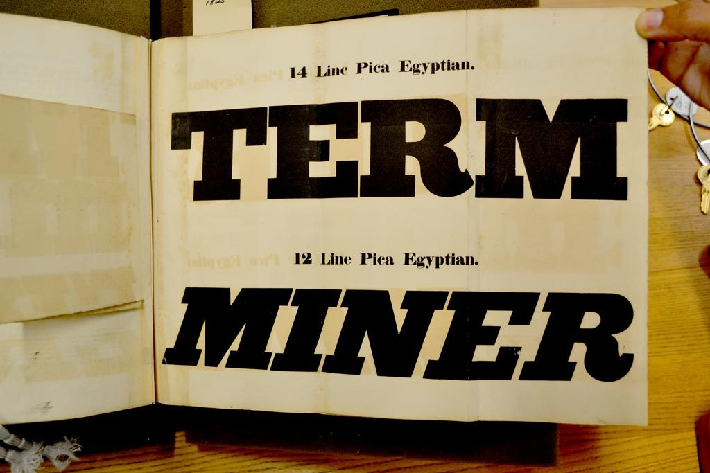

References / Type specimen / 560
Thorowgood specimen of Egyptian types, 1825
A fold-out page from a London typefounder’s specimen of about 1825, showing 12- and 14-line pica Egyptians, the heavy slab serifs of the early poster.
- Source
- Wikimedia Commons: Thorowgood 1825 Slab Type Specimen (photograph by James Puckett)
- Creator
- William Thorowgood, Fann Street Foundry, London (as attributed by the photographer)
- Made
- 1825 (as stated by the photographer)
- Style
- Victorian typography (agent-proposed, not yet reviewed by a person)
- Moods
- Heavy, blunt, commercial
- Evidence
- Inspected the Commons copy of James Puckett’s photograph (1024 × 683 px), uploaded from Flickr and credited to dailytypespecimen.com. The photograph does not name the library or shelfmark of the volume, so the physical copy is unidentified.
- Reviewed
- Rights
- Open license, stored. License: CC-BY-2.0. Rights policy
.jpg){kind=link}
Context
Wikipedia says the printed poster spurred demand for bold new types like the fat face and later the slab serif, and that Robert Thorne’s Fann Street Foundry popularised fat faces in London. Wikipedia: Fat face.
Wikipedia dates the slab serif to the early nineteenth century. Wikipedia: Slab serif.
Observed
- An open specimen book with a large fold-out page held flat by a hand at the upper right.
- “TERM” in roman capitals with heavy rectangular slab serifs and very little contrast between strokes, labelled “14 Line Pica Egyptian.”
- “MINER” in an italic of the same slab design, labelled “12 Line Pica Egyptian.”
- Black ink on aged cream paper, with ink show-through from the other side of the leaf.
- The labels are set small and centred above each specimen in a bold roman.
Why it belongs
The page shows the raw material of the poster style: one word per line, set as large as the page allows, with only a small label to name it.
Slab capitals at this weight read from across a street, which is why they took over posting bills.
Borrow
Set one short word per line at the largest size the measure allows.
Pair a heavy slab roman with its italic for contrast inside one family.
Measured
Machine-extracted by tools/image-traits.py on . Full measurement.
- Mean chroma
- 0.2
- Palette
- #cbbd98 26%
- #000000 20%
- #b9a877 14%
- #d9cba7 9%
- #c4b285 8%
- #b08108 4%
- #190a04 3%
- #8e600a 2%

